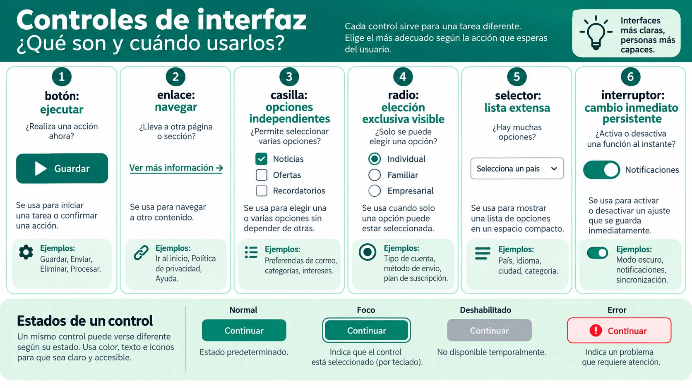

Contenido de la página
Objetivo docente
Elegir controles según el tipo de decisión y reconocer sus estados y semántica en el código generado.
Contenido para explicar

- Botón: ejecuta una acción.
- Enlace: navega a otro recurso o ubicación.
- Casilla: activa opciones independientes.
- Radio: elige una opción de un conjunto pequeño.
- Selector: elige dentro de una lista cuando el espacio o número lo aconseja.
- Interruptor: cambia inmediatamente un estado persistente claramente etiquetado.
La apariencia no cambia la semántica: un div con aspecto de botón sigue sin comportamiento nativo.
Ejemplo básico resuelto
Para la prioridad —Baja, Media o Alta— se usan radios si conviene comparar las tres opciones; un selector si el formulario es estrecho. Para «Guardar» se usa botón; para «Ayuda», enlace. La decisión se basa en la tarea y el contexto.
<fieldset>
<legend>Prioridad</legend>
<label><input type="radio" name="prioridad" value="alta"> Alta</label>
</fieldset>Partes relevantes: fieldset agrupa, legend nombra el grupo y el mismo name crea elección exclusiva.
RA4-PB06 · Control adecuado
Enunciado para publicar
Recibe ocho controles incorrectos. Sustituye al menos cinco, explica la decisión y muestra estados normal, foco, deshabilitado y error cuando proceda.
Solución orientativa
Mostrar ejemplo de solución
Un enlace que guarda pasa a botón; tres casillas exclusivas pasan a radios; un div pulsable pasa a button; una acción de navegación deja de ser botón; un selector sí/no inmediato puede ser interruptor con etiqueta clara. Cada cambio se prueba con teclado y nombre accesible.